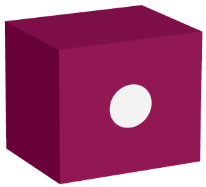

DINO DICE

Rules
- Game has two players playing in rounds.
- In each turn, a player rolls a dice as many times as they wish. Each roll is added to the round score.
- If a player rolls a 1, the round score is set to 0 and the turn is lost.
- Players can choose to 'hold', which means that the round score gets added to the game score.
- The first player to reach 100 wins.
- Have fun!